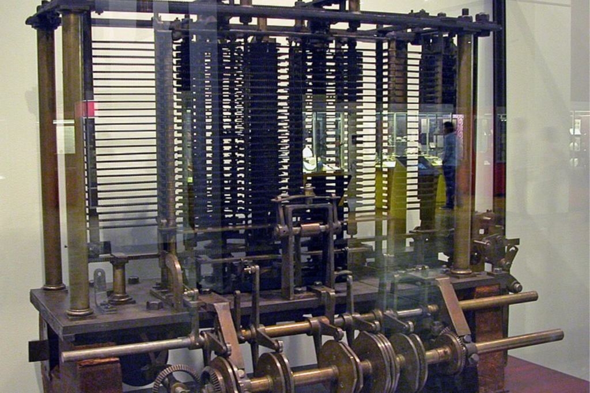

Augusta Ada Byron King, atualmente conhecida como Ada Lovelace, nasceu em 10 de Dezembro de 1815, em Londres na Inglaterra. Ada foi uma matemática e escritora, responsável por escrever aquele que veio a ser conhecido como o primeiro algoritmo de computador da história. Filha de George Gordon Byron, 6º Barão de Byron (Conhecido como Lord Byron), e Annabela Byron, Lady Wentworth, Lovelace teve uma infância abastada e muito confortável financeiramente.
Ada manteve sua natureza criativa, aplicando-a veementemente em seus trabalhos como matemática. Ela costumava dizer que a metafísica era tão importante quanto a matemática, sendo ambas ferramentas essenciais para investigar “mundos invisíveis ao nosso redor”. Já mais velha, Ada se tornou amiga do matemático britânico Charles Babbage, cooperando com ele em seu trabalho sobre uma Máquina Analítica, uma máquina que teria como propósito realizar cálculos utilizando determinadas funções. Babbage nunca conseguiu finalizar sua máquina devido às limitações tecnológicas da época, contudo, em 1985, um professor da Universidade de Sidney (Allan G. Bromley) e o curador do The London Science Museum (Doron Swade) revisaram o projeto original da Máquina Analítica e, ao longo de um período de 17 anos, construíram o dispositivo.

Em 1842, um jovem matemático e engenheiro italiano, chamado Luigi Federico Menabrea, publicou em francês um manuscrito de uma palestra dada por ele na Universidade de Turim. Ada se dedicou a traduzir esse artigo por pelo menos um ano, tendo terminado em 1843 e adicionado algumas anotações no final do livro. Nessas tais anotações, Ada discorre sobre como a Máquina Analítica poderia ser usada para alavancar o progresso da sociedade e não só realizar meros cálculos, além de em sua última nota, escrever um algoritmo para que a máquina pudesse computar a Sequência de Bernoulli. Esse feito foi posteriormente reconhecido pela academia científica como sendo o primeiro programa de computador da história.